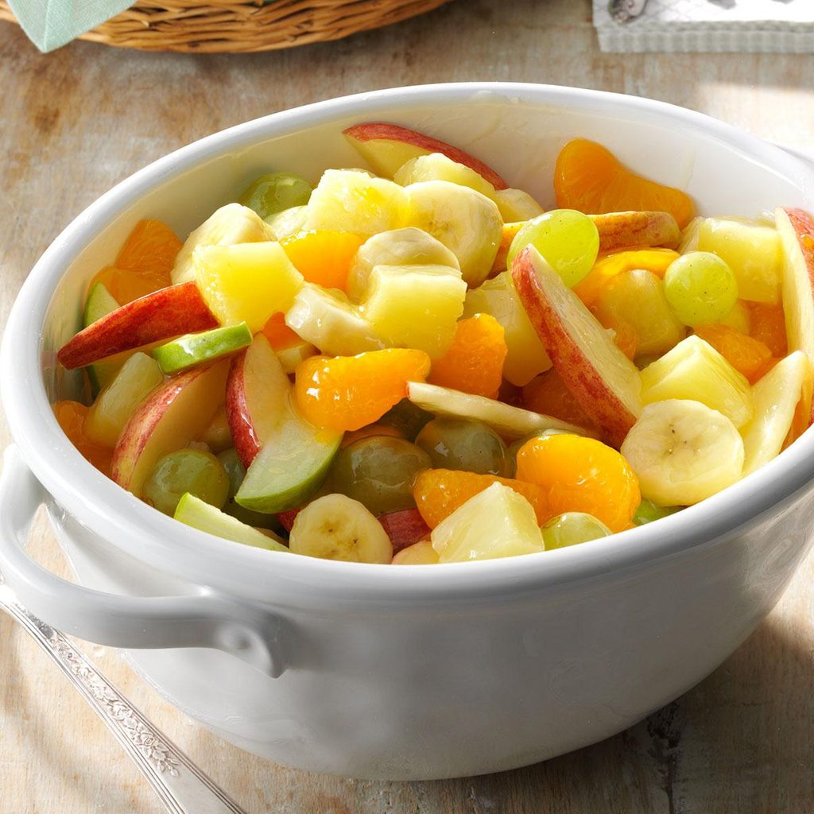

Fruit Salad!

A salad more fruity than your neighbors undergarments
If you want to have a salad that's so tasty you'll have to beat them off with a stick to get them to leave your kitchen, then look no further. This recipe will make you the toast of the ball and the king of the hill, if the hill was a more metaphorical place that represented ones skill at making fruit salad
Ingredients
- 1 can (20 ounces) pineapple chunks
- 2 large firm bananas, cut into 1/4-inch chunks
- 1 cup green grapes
- 1 can (15 ounces) mandarin oranges, drained
- 1 medium red apple, sliced
- 1 medium green apple, sliced
- 2 tablespoons cornstarch
- 1/2 cup sugar
- 1/3 cup orange juice
- 1 tablespoon lemon juice
- Drain pineapple, reserving juice. Combine the pineapple, bananas, grapes, oranges and apples in a large bowl; set aside.
- In a small saucepan, combine sugar and cornstarch. Add the orange juice, lemon juice and reserved pineapple juice; stir until smooth. Bring to a boil; reduce heat. Cook and stir for 2 minutes. Pour over fruit; mix gently. Cover and refrigerate until serving.